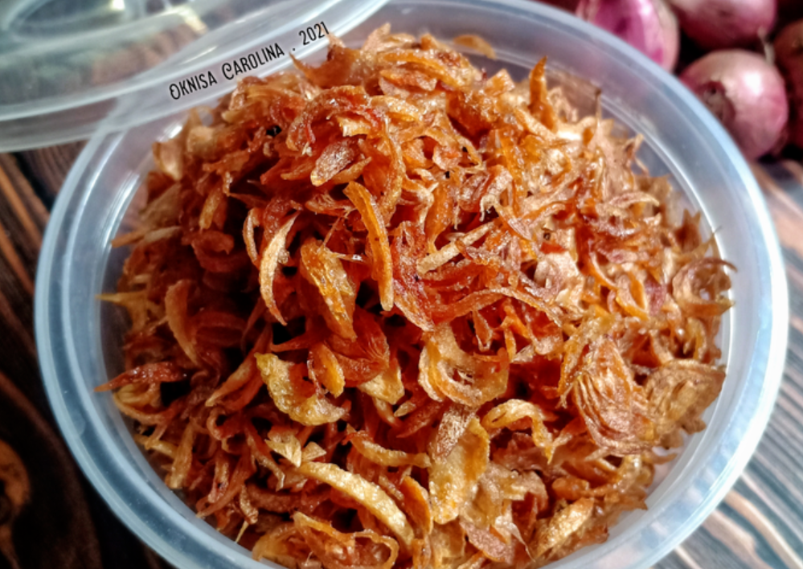

Produk Kami

Pesan Sekarang
Varian Crispy Pedas
Lebih garing, renyah dan pedas untuk camilan. Harga: Rp 60.000 / 200gr.
Onion Eco dibuat dari bahan alami, tanpa pengawet, dan diproses secara berkelanjutan untuk menjaga kualitas dan lingkungan.
Apa Kata Pelanggan?
"Produk ini membuat masakan saya lebih lezat! Sangat recommended." - Sarah A.
"Bawang goreng yang eco-friendly, rasa asli tanpa bahan kimia. Top!" - Budi P.